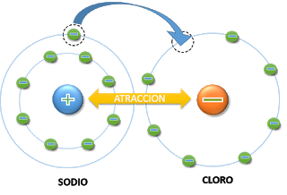

El Enlace Químico es la unión que forman dos partículas (átomos, moléculas o iones) debido a la fuerza de atracción que existe entre ambas.
Tipos de Enlace
- Enlace Iónico
Es la unión de átomos que resulta de la presencia de atracción electrostática entre los iones de distinto signo, fuertemente electropositivo (baja energía de ionización) y otro fuertemente electronegativo (alta afinidad electrónica).
Se produce cuando en el enlace, uno de los átomos capta electrones del otro.
Propiedades:- Son enlaces muy fuertes
- Presentan altos puntos de fusión (300-1000ºC)
- Son solubles en agua(300-1000ºC)
- Son conductores de electricidad en agua
Ejemplos:- Na+ + Cl- → NaCl (cloruro sódico o sal común)
- Ba+2 + O-2 → BaO (óxido de bario)
- Mg+2 + 2Cl- → MgCl2 (cloruro de magnesio)
 Al ceder un electrón, se forma un ión positivo Na+ y otro negativo Cl- que se atraen.- Enlace Covalente
Se produce cuando estos, para alcanzar el octeto estable, comparten electrones del último nivel.
La diferencia de electronegatividades entre los átomos no es suficientemente grande como para que se efectúe una transferencia de electrones. De esta forma, los dos átomos comparten uno o más pares electrónicos en un nuevo tipo de orbital, denominado orbital molecular.
Los enlaces covalentes se suelen producir entre elementos gaseosos o no metales.
Entre los dos átomos pueden compartirse uno, dos o tres pares de electrones, lo cual dará lugar a la formación de un enlace simple, doble o triple respectivamente. En la representación de Lewis, estos enlaces pueden representarse por una pequeña línea entre los átomos.
Propiedades:- Temperaturas de fusión elevadas (superiores a 1000ºC).
- Son malos conductores de electricidad.
- Poseen una alta dureza.
- Son insolubles.
Ejemplos:- Cl- + Cl- → Cl2 (gas cloro)
- C + 4H → CH4 (metano)
- H + H → H2 (gas hidrógeno)
 Al compartir dos electrones, el cloro y
el hidrógeno completan sus órbitas
Al compartir dos electrones, el cloro y
el hidrógeno completan sus órbitas
- Enlace Métalico
Es un enlace químico que mantiene unidos los átomos (unión entre núcleos atómicos y los electrones de valencia, que se juntan alrededor de éstos como una nube) de los metales entre sí.
La fuerza de atracción entre las cargas positivas de los núcleos y las cargas negativas de la nube de electrones mantienen unido el enlace metálico.
La forma de cumplir la regla de octeto es mediante la compartición de electrones entre muchos átomos. Se crea una nube de electrones que es compartida por todos los núcleos de los átomos que ceden electrones al conjunto.
Entre los dos átomos pueden compartirse uno, dos o tres pares de electrones, lo cual dará lugar a la formación de un enlace simple, doble o triple respectivamente. En la representación de Lewis, estos enlaces pueden representarse por una pequeña línea entre los átomos.
Propiedades:- Poseen una temperatura de fusión y ebullición muy elevada
- Son buenos conductores de electricidad
- Son dúctiles, maleables y alta dureza
- Se oxidan con facilidad
Ejemplos:Red cristalina del cobre: iones Cu2+
Red cristalina del sodio: iones Na+
Red cristalina del magnesio: iones Mg2+
 Los electrones del cobre circulan
libremente (nube) atrayendo a los núcleos
Los electrones del cobre circulan
libremente (nube) atrayendo a los núcleos